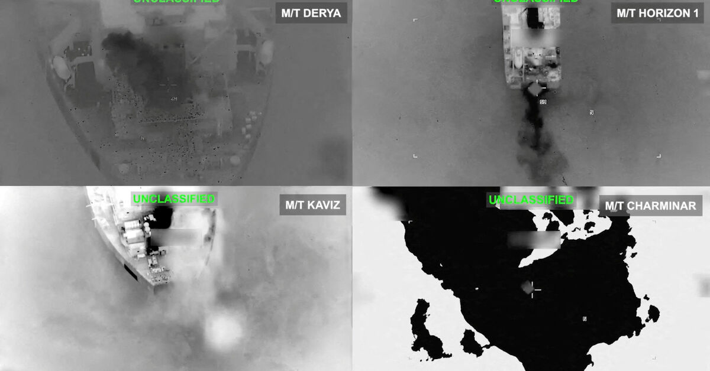

Houthis take Mocha — second choke on global oil
11 Sep 2026
Iran-aligned Houthis seized Yemen’s Red Sea port of Mocha and pressed toward islands near Bab el-Mandeb, opening a second energy choke after Hormuz. Yemeni, Iranian, and regional sources told Reuters/Straits Times the IRGC pushed the Tihama coastal blitz; Brent jumped as much as 4% to about $105. Trump said he expects the Iran war to end after the November US midterms even as Saudi–Houthi fighting escalates.
Open Straits Times · Open Reuters
Israel: Ali al-Taher Hezbollah tunnels destroyed
11 Sep 2026
Netanyahu and Katz said Israeli forces demolished key Hezbollah tunnels under the Ali al-Taher ridge in southern Lebanon — “strategic terrorist infrastructure” built over two decades with Iranian funding. Lebanon’s state news agency reported a massive explosion and tremors in Nabatieh; Israel had claimed the ridge last week and still holds a southern “security zone.”
Open Hindustan Times

IMF: resilient so far — uncertainty still high
11 Sep 2026
IMF spokesperson Julie Kozack said the global economy has weathered six months of US–Iran war energy shocks better than feared, but uncertainty remains elevated. She framed a negative supply shock from energy/commodities against a positive AI-driven demand shock, with “significant differences” across countries. Annual Meetings land in Bangkok Oct 12–18.
Open The Star / Xinhua · Open Al-Monitor
Walang Pasok: Habagat flipped Thursday classes
10 Sep 2026
Malacañang MC 135 put NCR plus 13 provinces — including Laguna — on alternative learning Thursday after NDRRMC flagged enhanced Habagat rain. Local mayors could still suspend outright; vital health and disaster agencies stayed on site. Parent cue for Calamba: check LGU and school chat before sending kids if Friday stays wet.
Open ABS-CBN · Open Chronicle
DepEd: PISA for Schools after best-ever scores
10 Sep 2026
After 2025 PISA mean scores hit national highs (science 373, math 371, reading 367), DepEd is rolling out PISA for Schools between international cycles so campuses can diagnose locally. Usec Ron Mendoza framed it as keeping momentum; Angara’s reform lane still stresses equity and teacher support — gains are real, Level-2 proficiency still thin.
Open The POST · Open GMA
Eala: Asiad gold hunt as World No. 18
11 Sep 2026
Philstar: Alex Eala (WTA 18) leads PHILTA’s five-player Nagoya squad — singles plus doubles with Shaira Rivera; Madis/Aludo and Alcantara–Rivera fill the rest. Singapore WTA 500 (21–26 Sep) is the bridge; China Open WTA 1000 overlaps Asiad tennis (27 Sep–3 Oct), and PHILTA has asked the WTA for an exemption. Hangzhou twin bronzes are the floor; Zheng Qinwen will not defend.
Open Philstar · Open Tiebreaker

USSF-153 backup today; O3b closes Sunday
11 Sep 2026
SpaceX listed a Fri 11 Sep 8:23am PT backup for Falcon 9 USSF-153 from Vandenberg SLC-4E (classified Space Force payload; B1081 flight 27 to Of Course I Still Love You) after the Thu primary window. Next headline pad: Sun 13 Sep ~2:49pm ET SES O3b mPower 11–13 from Cape Canaveral SLC-40 — final three Boeing-built MEO broadband birds for SES.
Open SpaceX USSF-153 · Open Space Coast Daily
Garmin: Venu 4 fall detection hits 100%
10 Sep 2026
Software 18.30 is now fully available on Venu 4 — all-day fall detection out of beta, plus “OK Garmin” hands-free voice, indoor XC Ski, and interval pace fixes. Same Q3 wave touched Venu X1 / FR 970 without fall detect yet. Separately, Connect app strings still name a CIRQA Smart Band Pro (two buttons / audio cues) — not a launch.
Open Gadgets & Wearables